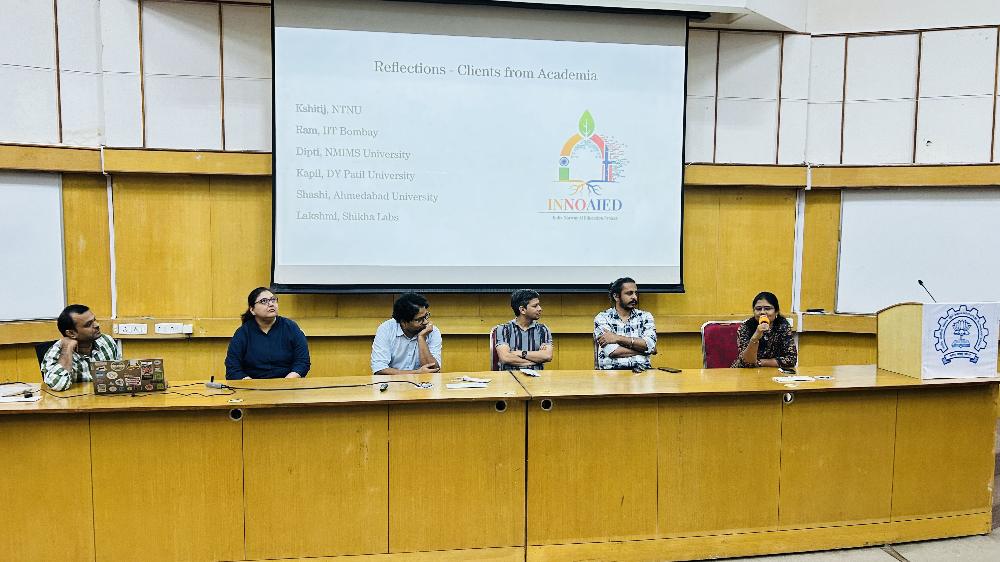
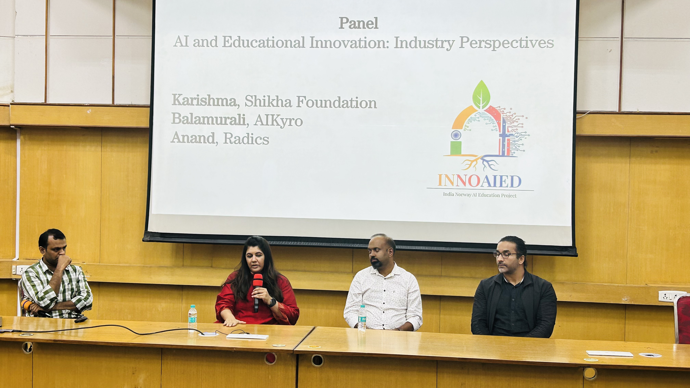
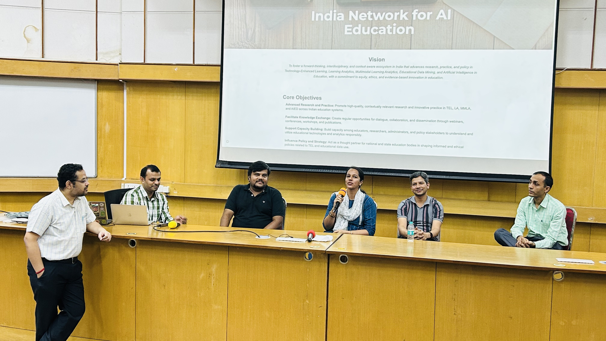

India-Norway AI in Education Project
INNOAIED Enhancing AI Education between India and Norway
INNOAIED is an Indo-Norwegian collaboration between IIT Bombay and NTNU that strengthens AI in Education through project-based learning, AI-powered educational software, workshops, exchanges, empirical evaluation, and a growing community of practice.
Project Overview
INNOAIED connects AI education, AI in education, learning analytics, multimodal data, and responsible educational technology development.
The initiative uses Project-Based Learning to help students build AI-Powered Software for education. Students learn to identify educational problems, formulate AI-supported solutions, implement and evaluate prototypes, and reflect on ethical and privacy-related implications in real educational settings.
What INNOAIED Aims To Build
The project creates a launchpad for sustained collaboration between IIT Bombay and NTNU.
PBL-based AI Education
Students internalize AI in Education processes through workshops, intensive courses, exchanges, and client-driven development.
AI-Powered Software
Student teams develop APS prototypes for educational contexts and prepare them for empirical evaluation with real users.
Community of Practice
Faculty, students, researchers, industry partners, and educational stakeholders collaborate through schools, workshops, and symposia.
Research and Dissemination
The collaboration supports joint publications, workshops, course materials, student mobility, and future research projects.

First International Symposium
The ET617 course culminated in the First International Symposium for the INNOAIED India-Norway AI in Education Project.
F.C. Kohli, KReSIT Building, IIT Bombay
The symposium brought together students, faculty, researchers, industry collaborators, and academic partners from India and Norway. Student teams presented AI-in-Education prototypes developed through ET617, and the program included keynote talks, panel discussions, project feedback, and networking.

Participants
113 participants attended, including NTNU faculty and students, IIT Bombay faculty, ET617 student teams, Ph.D. students, industry partners, and academic collaborators.
Program
The event featured student project presentations, an invited lecture by Dr. Shuchi Grover on AI in educational assessment, client reflections, and panels on industry and the India AIED network.
Outcome
The symposium strengthened India-Norway collaboration, showcased student-led APS prototypes, and created concrete next steps for joint publications, workshops, and sustained AIED partnerships.
People and Collaborators
INNOAIED brings together academic leadership, student teams, project staff, and industry and university partners.
India Team
Prof. Ramkumar Rajendran and Prof. Sahana Murthy lead the India-side work through CET, IIT Bombay, with research scholars, project staff, mentors, and ET617 student teams.
Norway Team
Prof. Kshitij Sharma, Prof. Nisha Dalal, and NTNU collaborators contribute expertise in AI, learning analytics, project-based courses, and AI-powered educational systems.
Academic and Industry Network
Collaborators include EdTech companies, universities, researchers, and AIED network members who provide project contexts, mentorship, evaluation feedback, and dissemination channels.



Forward Plan
The next phase extends APS work, student exchange, workshops, and dissemination.
APS 2.0 through ET617
The course will use the adapted compendium as a foundational resource while refining design methods, evaluation metrics, and contextual adaptation for Indian educational ecosystems.
Research stay at NTNU
A three-month research stay is planned to support joint research, prototype development, and institutional collaboration.
Joint workshop
The Indian and Norwegian teams plan a workshop on AI in education, APS-based learning models, and cross-cultural pedagogical innovation.
Publications and evaluation
The collaboration will target international journals and conferences while empirically evaluating student-created AI-powered educational software.